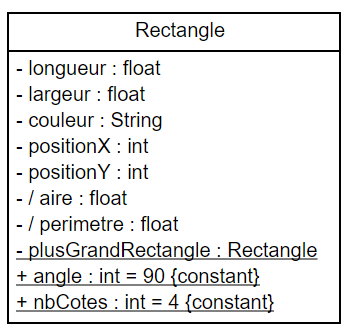
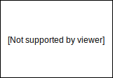
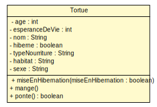

<!doctype html>
<html lang="en">
    <head>
        <meta charset="utf-8">
        <title>reveal-md</title>
        <link rel="stylesheet" href="./css/reveal.css">
        <link rel="stylesheet" href="./css/theme/black.css" id="theme">
        <link rel="stylesheet" href="./css/highlight/zenburn.css">
        <link rel="stylesheet" href="./css/print/paper.css" type="text/css" media="print">

    </head>
    <body>

        <div class="reveal">
            <div class="slides"><section  data-markdown><script type="text/template"><style>
.reveal pre{
        box-shadow: 0px 0px 0px;
}
</style>

### TD/TP 1 Classes java basiques
---------------------------
<br>
<br>
<br>
<br>
<br>
<br>
<br>
<br>
<p style="color:#78a22f;">&#x2709; julien.cufi@inra.fr</p>
</script></section><section  data-markdown><script type="text/template">#### Rappel
---------------------

* Syntaxe UML d'un attribut dans un classe de la forme :
   
    [visibilité][/]nom[:type][[multiplicité]][= valeur ] <small>
    </small>
    * Visibilité ∈ {+, -, #, ~}
    * Multiplicité définit :
        * une valeur 1, n 
        ou 
        * une plage 1..2, 1..n</script></section><section  data-markdown><script type="text/template">#### Exemples
-------------------------
* le nombre de cotés est de type int avec une visibilité publique et est constant
    <pre><code>+ nbCotes : int = 4 {constant} </pre></code>
* l'aire est un attribut dérivé de type float avec une visibilité privée
    <pre><code>- / aire : float</pre></code>
* le plus grand rectangle est un attribut de classe avec une visibilité protected
    <u style="color:white"><pre><code># plusGrandRectangle : Rectangle</pre></code></u></script></section><section  data-markdown><script type="text/template">
#### Diagramme de classe et code JAVA
------------------
<br/>
<div style="float:left;width:35%;height:100%;">

<small>(Sans opérations)</small>
</div>

</div>
<div style="float:right;width:65%">
<pre ><code style="overflow-y:hidden;height:100%;">
public class Rectangle {
    private float longueur;
    private float largeur;
    private String couleur;
    private int positionX;
    private int positionY;
    private static Rectangle 
            plusGrandRectangle;
    
    public final static int angle = 90;
    public final static int nbCotes = 4;}

</code></pre>
</div>
</script></section><section  data-markdown><script type="text/template">
#### Diagramme d'instance et instanciation en JAVA
------------------
<br/>

 

```java
public class Rectangle {
// Omission volontaire des attributs
public static void main(String[] args){
    Rectangle r;
    // Création d'une instance
    r = new Rectangle(5f, 5f, "Noir", 0, 0);
    System.out.println("Aire : "+r.aire());
}}
```</script></section><section  data-markdown><script type="text/template">
#### Diagramme de classe de la Tortue
------------------


</script></section><section  data-markdown><script type="text/template">
#### Code JAVA de la classe Tortue
------------------

```java
public class Tortue {
	private int age, esperanceDeVie;
	private String nom;
	private boolean hiberne;
	private String typeNourriture, habitat, sexe;
	private void miseEnHibernation(boolean miseEnHibernation) {
		this.hiberne = miseEnHibernation;
	}
	public void mange() {
		System.out.println("Mange..");
	}
	public boolean ponte() {
		return "F".equals(this.sexe);
	}}
```
</script></section><section  data-markdown><script type="text/template">### Mise en pratique
---------------------------
</script></section><section  data-markdown><script type="text/template">
#### Compilation / Execution d'un programme
------------------

1. Configuration du CLASSPATH (~/.bashrc)
```bash
$ export CLASSPATH=${HOME}/Java:.
```
2. Prise en compte de la variable 
```bash
$ source ~/.bashrc
```
3. Compilation de l'exemple avec javac
```bash
$ javac <nom package>/SommeEtProduit.java
```
4. Execution du programme avec java
```bash
$ java <nom package>.SommeEtProduit
```

</script></section></div>
        </div>

        <script src="./lib/js/head.min.js"></script>
        <script src="./js/reveal.js"></script>

        <script>
            function extend() {
              var target = {};
              for (var i = 0; i < arguments.length; i++) {
                var source = arguments[i];
                for (var key in source) {
                  if (source.hasOwnProperty(key)) {
                    target[key] = source[key];
                  }
                }
              }
              return target;
            }

            // Optional libraries used to extend on reveal.js
            var deps = [
              { src: './lib/js/classList.js', condition: function() { return !document.body.classList; } },
              { src: './plugin/markdown/marked.js', condition: function() { return !!document.querySelector('[data-markdown]'); } },
              { src: './plugin/markdown/markdown.js', condition: function() { return !!document.querySelector('[data-markdown]'); } },
              { src: './plugin/highlight/highlight.js', async: true, callback: function() { hljs.initHighlightingOnLoad(); } },
              { src: './plugin/zoom-js/zoom.js', async: true },
              { src: './plugin/notes/notes.js', async: true },
              { src: './plugin/math/math.js', async: true }
            ];

            // default options to init reveal.js
            var defaultOptions = {
              controls: true,
              progress: true,
              history: true,
              center: true,
              transition: 'default', // none/fade/slide/convex/concave/zoom
              dependencies: deps
            };

            // options from URL query string
            var queryOptions = Reveal.getQueryHash() || {};

            var options = {"slideNumber":"c/t","controls":false,"center":false};
            options = extend(defaultOptions, options, queryOptions);
        </script>


        <script>
            Reveal.initialize(options);
        </script>
    </body>
</html>
